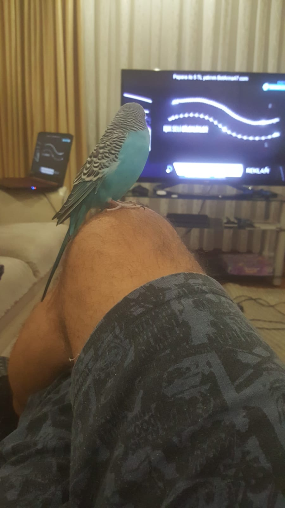

Hakkımda :
- Benim adım nani(guş da desen olur)
- Ati, Selçuk Baba ve Meltem Başkanla aynı evde yaşıyorum
- Yaklaşık 6 yaşındayım
- Arada bize ayça abla gelir o da arkadaşlarımdan biridir.
Bazı fotoğraflarım
Yapmayı sevdiklerim :
- Televizyon ya da bilgisayar sesi duyarsam bişeyler anlatmaya bayılırım
- Selçuk abi ve Meltem başkanın saçlarını kemiririm.
- Ati abim duş hazırlarsa kanatları çırparım suda bi gezerim var ya off!!
- Beni çıkaran olursa mutlaka bi televizyona konar arkasında boku bırakırım.
- Çiğdem yiyen olursa gider tepside karıştırırım tuzlu tuzlu iyi oluyor.
En sevdiğim arkadaşım Bulut
Bulut ayça ablalarda bir süre yaşayan argıdeşim.
Daha yaşı küçük ama iyi biri. Umarım evinde mutludur.